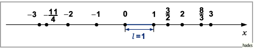

Darstellung der rationalen Zahlen
- 1. Dezimalbruch und Kettenbruch:
- Jede rationale Zahl a kann in der Form eines endlichen oder unendlichen periodischen Dezimalbruches oder auch in der Form eines Kettenbruches dargestellt werden.
- 2. Geometrische Darstellung:
- Wenn auf einer Geraden ein Anfangspunkt 0 (Nullpunkt), eine positive Richtung (Orientierung) und eine Längeneinheit l (Maßstab), (s. auch Skala) festgelegt worden sind, dann entspricht jeder rationalen Zahl a ein bestimmter Punkt dieser Geraden.

Er hat die Koordinate a und ist ein sogenannter rationaler Punkt. Die Gerade wird Zahlengerade genannt. Da die Menge der rationalen Zahlen überall dicht ist, gibt es zwischen je zwei beliebigen rationalen Punkten unendlich viele weitere rationale Punkte.